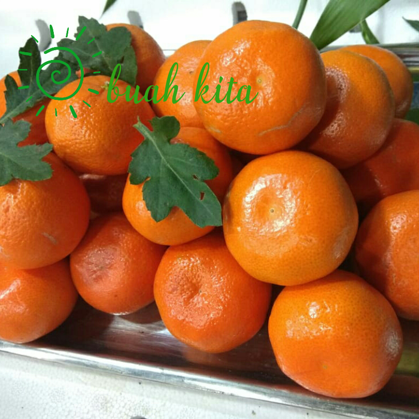

Tentangbuah.com

Jeruk

Jeruk atau limau adalah semua tumbuhan berbunga anggota marga Citrus dari suku Rutaceae (suku jeruk-jerukan).
Anggotanya berbentuk pohon dengan buah yang berdaging dengan rasa masam yang segar, meskipun banyak di antara anggotanya yang memiliki rasa manis.
Rasa masam berasal dari kandungan asam sitrat yang memang menjadi terkandung pada semua anggotanya
Sebutan "jeruk" kadang-kadang juga disematkan pada beberapa anggota marga lain yang masih berkerabat dalam suku yang sama, seperti kingkit. Dalam bahasa sehari-hari, penyebutan "jeruk" atau "limau" (di Sumatra dan Malaysia) sering kali berarti "jeruk keprok" atau "jeruk manis". Di Jawa, "limau" (atau "limo") berarti "jeruk nipis".
.
Khasiat jeruk
- Mencegah penyakit jantung
- memurnikan darah
- Meningkatkan sistem kekebalan tubuh
- mencegah kangker
- Menurunkan tekanan darah
- Memeprkuat gigi
Daftar Harga
| Jenis jeruk | harga | |
|---|---|---|
| Per kilo | Per biji | |
| yuzu | 50.000 | 5.000 |
| jeruk bali | 60.000 | 6.000 |
| jeruk nipis | 70.000 | 7.000 |
| jeruk keprok | 55.000 | 5.500 |